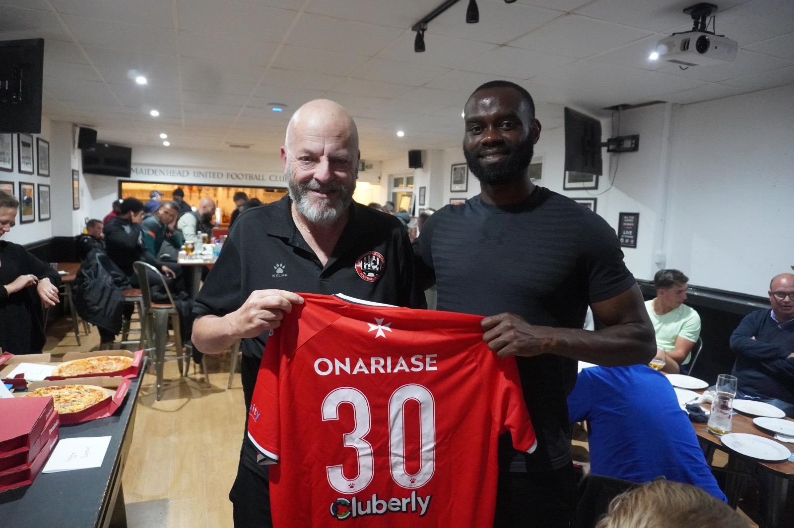
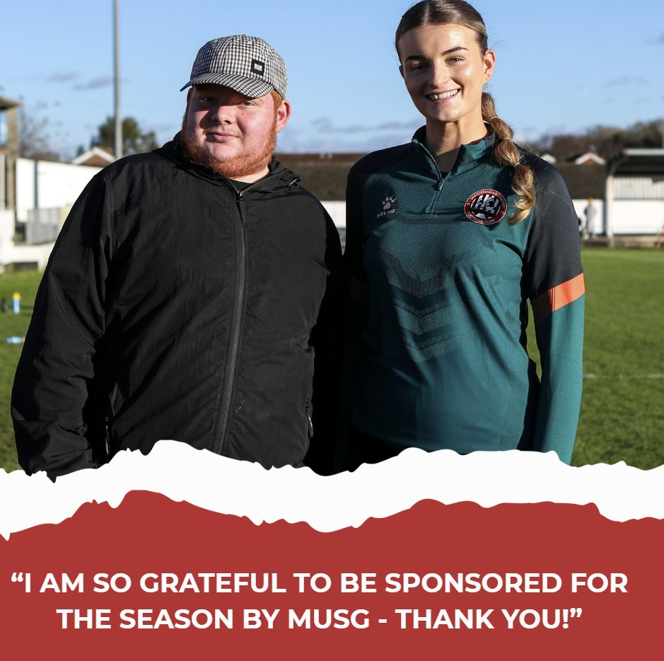

MUSG is proud to support Maidenhead United Football Club both on and off the pitch. Through sponsorship, we help enhance the matchday experience, support players, and contribute to the wider club community.
Support the Magpies while promoting your business within our growing supporter community.
We actively support the Men’s First Team through player sponsorship. For the 2025/26' season, Manny Onariase was our chosen player pictured here with Mick Nile.

MUSG is committed to supporting the continued growth of the Women’s team. Sponsorship helps provide vital backing and raises the profile of the women’s game within the club. For the 2025/26' season, Molly McKeever was our chosen player pictured here with Luke Bateman.

We are always looking to work with local businesses and partners who share our passion for the club and community.
Whether you’re a small local business or a larger organisation, we’d love to hear from you.